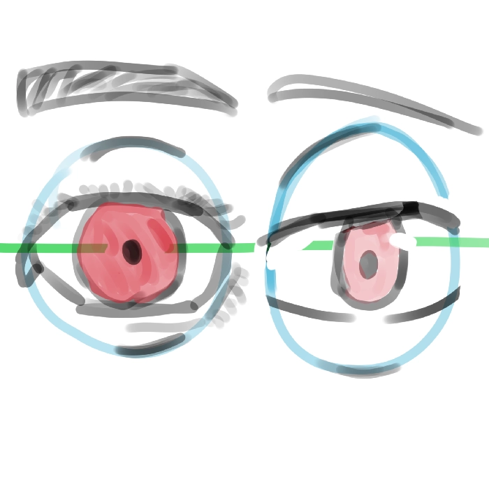
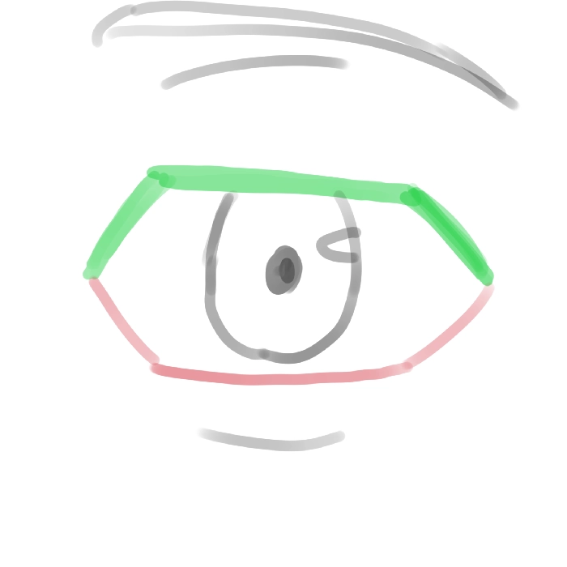
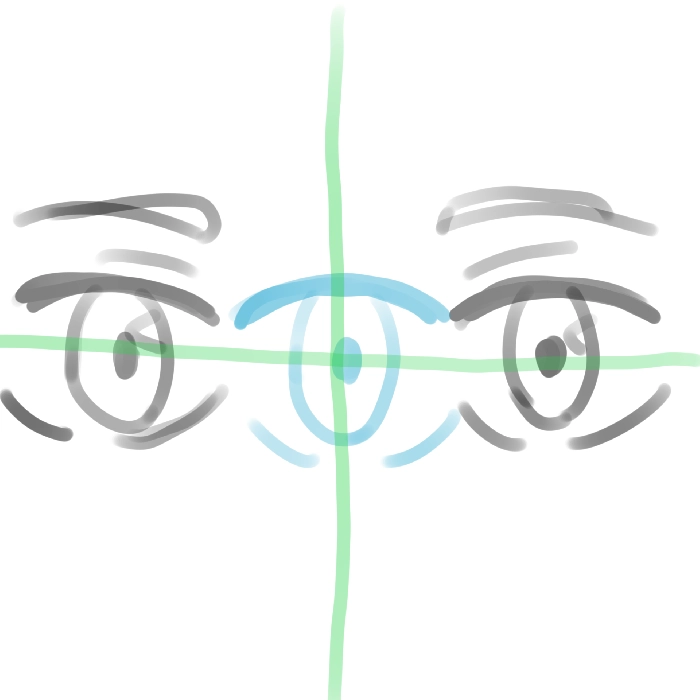

comment dessiner les yeux
Dans ce cours, nous allons
voir comment dessiner les
yeux. Il existe pas mal de
tutos sur YouTube qui
expliquent bien les choses,
certes, mais ils ne vous
disent pas tout à ce sujet.

Tout d'abord, un œil réaliste est composé d'un rond (le globe oculaire). Quant à l'œil manga, il est également composé d'un rond, mais celui-ci est légèrement étiré vers le haut et le bas pour donner ce côté mignon chez les filles et plus esthétique chez les garçons.
Maintenant que vous savez
de quoi se compose l'œil, il
faut savoir comment
fonctionnent les paupières.

Si vous observez vos yeux, vous pourrez voir qu'il y a deux paupières : la paupière inférieure et la paupière supérieure. On peut les représenter par six traits en dessin manga, plus ou moins étirés en fonction du style de l'artiste.
Petit tips : les cils de
la paupière supérieure
seront toujours plus épais
que ceux de la paupière
inférieure, qui seront
toujours plus fins.

Maintenant, tout va être plus simple ! Il suffit de tout placer à l'intérieur, au centre, puis de dessiner le deuxième œil à une distance d'un œil d'écart (en l'inversant, évidemment). Et voilà : vous avez maintenant deux yeux parfaitement placés sur l'axe horizontal.